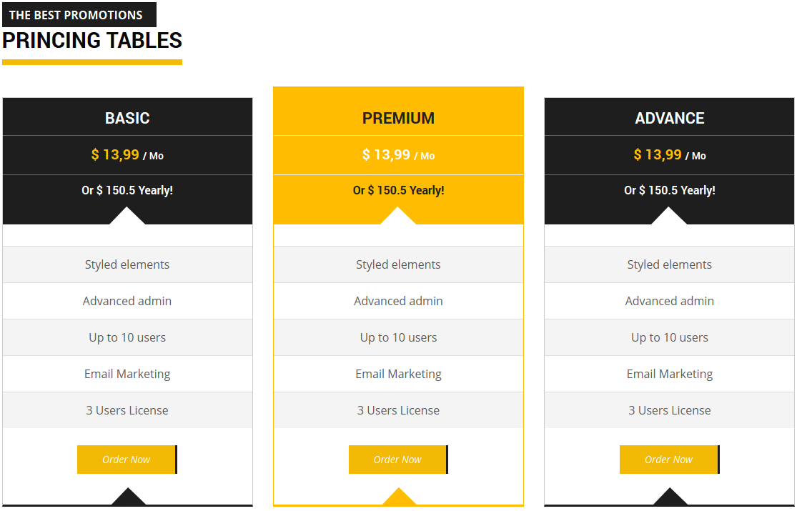

Full State
Software And Corporate WordPress Template
- Created: 15/04/2014
- By: freedesigns
- Email: freedesigns@ymail.com
- support: support@freedesigns.me
- Themes: www.freedesigns.me
Thank you for purchasing my theme. If you have any questions that are beyond the scope of this help file, please feel free to email via my user page or my social links contact. Thanks so much!
Created: 15/04/2014
By: Freedesigns
Email: support@freedesigns.me
Introduction
Here's the general Introduction of this item:
Full State is a clean and elegant WordPress theme for Real State and corporate. This template can also be used for business websites, portfolios and more. The CSS and design is flexible, easy to customize and modify. Is a unique design based on Bootstrap, is sensitive and is consistent with a wide range of mobile devices.
Thank you for purchasing my theme. If you have any questions that are beyond the scope of this help file, please feel free to email via my user page contact form here. Thanks so much!
This theme was created with Wordpress version 3.9
Wordpress installation
- This Theme is a responsive layout with up to 16 colums based on the 1170 Bootstrap System. It uses media queries to fit for different screen resolutions.
- If you don't have Wordpress on your server yet, you can download a copy of the latest Wordpress version here. Next, go through the installation instructions inside readme.html file to install Wordpress on your server.
- In order to install Full State Theme, follow these steps:
- Extract your download package .zip file and look for the folder named "Full State - Responsive-Wordpress-theme.zip".
- Next, enter this folder and upload Full State folder to http://yourdomain.com/your_wordpress_dir/wp-content/themes/ directory via any FTP program like Filezilla or CuteFTP.
Please note that some hostings have a restriction on a size of a file that you are uploading. If any warnings appear, most probably, your hosting has file size limit. And the theme .zip file is too large to be uploaded via WordPress Panel. You can try contacting your hosting provider and ask to ease this restrictions.
Otherwise you can install theme via FTP. Simply unzip the installable file and upload the theme folder via FTP into "your_site/wp-content/themes/".
Attention! Theme will work fine on the vast majority of correctly installed and configured WordPress sites without any additional settings. However on some (very rear) hosting configurations you can notice that images on your site are not displaying. If you are experiencing this issue, please follow these steps to fix it:
- Make sure that theme installed strictly to your_site/wp-content/themes/folder.
- The "folder your_site/wp-content/uploads" must be created. On some hostings you will need to set its CHMOD to 755, on others to 777.
If above steps did not yield any results, please don’t hesitate to address this issue directly to your hosting company. Since this is most likely a server-related problem, we will not be able to help you!
Theme activation:
- To activate Full State Theme, log into your Wordpress admin using the following URL: http://yourdomain.com/your_wordpress_dir/wp-login.php Next, go to Appearance > Themes. Here, you should see a thumbnail of Full State Theme. Click on the ''Activate'' button to activate your new theme.
-
Here it shows how you can activate your topic.
-
Here your site will now be displayed after installed.
The following video shows how you can install and activate the theme:
Theme Child:
- It's theme is ready to support Child Theme.
- A WordPress child theme is a theme that inherits the functionality of another theme, called the parent theme. Child theme allows you to modify, or add to the functionality of that parent theme. A child theme is the safest and easiest way to modify an existing theme, whether you want to make a few tiny changes or extensive changes. Instead of modifying the theme files directly, you can create a child theme and override within.
Importing about install
- It is very important that before you start typing in your subject content area, select the option of "Post name": Follow the steps below.
- Go to the admin panel of your topic "Dashboard" url: http://yourdomain.com/your_wordpress_dir/wp-admin
- Then head to Setting/permalinks (http://yourdomain.com/your_wordpress_dir/wp-admin/options-permalink.php).
- In the option "Common Settings" select the option "Post name".
The following video shows how to turn on the issue permalink:
Settings General
It is important to do these steps for the proper functioning of your site.
- In general options for the site gives you many options, such as the site name, site url, etc.. to change all these options, go to your WordPress admin using the Following URL:http://yourdomain.com/your_wordpress_dir/wp-admin/options-general.php
- You may set the number of post to display on your website and other options more. To edit these options will: URL:http://yourdomain.com/your_wordpress_dir/wp-admin/options-reading.php
-
Here you can edit the title, email, url and other place.
-
Here you can define the amount of post showing your site.
Add new pages
You should go to the wp admin panel to add new pages to your topic, to add and edit your pages should go to: Dashboard/pages.
-When creating a new page may give some style on the General option of the theme admin panel. Simply select the style that will give your page created.
-
Here you can add all the pages you want on your topic.
-
Here you can define the style that will have your pages.
The video below demonstrates how you can create new pages:
Static Front Page
To configure home page, firstly you need to select type of content displayed on that page. It can be a static page or a list of posts. In order to do this, go to Settings -> Reading and in Front Page Displays option, choose an option that you are interested in.
The video below demonstrates how you can activate your Static Front Page:
General Options
- In the admin panel theme, find all the necessary options to edit the content of your website. Here you can add and remove any content you want, such as text, images, logos, etc ...
- The administration panel that was created for this theme was designed with the objective that the user can more easily manage your site.
- You can define how the content of your pages is going to be show, you can define each location of content, edit the names of static menus.
- To edit the content of the web panel administration go to the website: http://yourdomain.com/your_wordpress_dir//wp-admin/themes.php?page=options-framework
- Information: In this option you can add text link, you can also add icons to the texts.
- Newsletter Section: In the tab of the Widget is a sidebar called "Sidebar Newsletter" there you can use the widget you want for that section, we recommend using this widget "mailchimp" .
- Logo Zone: Here you can edit the name and logo of your website.
- Favico and Logo Login: Here you can add the Favicon image your site will show.
Configuration Footer Options
- In tis option you can edit the Footer info, and add all the information you want to show.
First Zone Configuration
- In the first area you can put a banner with various texts and that includes your text link and button.
Second Zone Configuration
- First Section: In this option you could add a region with title and several texts with your link. You can also add text to the icons.
- Second Section: In this option you can a region title and several link in menu form.
- Third Section: Here you can display "tags" Site.
- Fourth Section: Here you can put a comment and name of the author of comenterio.
- Copyright Zone: Here you can edit the copyright of your site, and choice the number of domain. In Text Link you can choice the number of links for show and edit the content.
-
Here you can edit the content of the footer section.
-
Here you can edit the content of the footer section.
The video below demonstrates how you edit the footer seccion.
Slider ( Revolution Sliders )
slider of our site is integrated with plugins "Slider Revolution! Responsive WordPress Plugin". This plugin gives you the ability to create the fomra the slider in place.
Create a responsive(mobile friendly) or fullwidth slider with must-see-effects and meanwhile keep or build your SEO optimization (all content always readable for search engines). See the heaps of custom transitions/animations for each object on the page! Customize this slider with our convenient drag&drop backend to your very needs.
Slider Revolution! Responsive WordPress PluginHow to install
- above all it is very important that you copy the plugins called "revslider" in http://yourdomain.com/your_wordpress_dir/wp-content//plugins
- after copy go to the administration panel of Wordpress "Dashboard" and in section plugins, activate the plugins "Revolution Slider".And thus is activated the plugin.
Then proceed to the Revolution Slider system settings on your subject.
- First you must create your slider set as his slider is displayed to define width, length, etc...
- After setting up your slider, you must follow these steps to turn your show your slider in the Home page..
- Go to Dashboard/Revolution Slider
- Copy the text that is inside the box called "Slider Alias:"
- Go to Dashboard/Appearance/Theme Options/General Options/Slider
- Paste in the text box tab Slider of the copied text into the box "Slider Alias:"
- Then save, and his slider is displayed correctly on your Home page.
-
Here you can edit the content of the slider section.
-
Here you can edit the content of the slider section.
The video below demonstrates how you edit the slider seccion.
Site Content
- The site content is created with several content areas which you can implement to your liking and you can design your pages as you wish. With this new option is very easy to create your pages according to the needs and characteristics of your site. May create as many pagians you want with the content you want.
Types of Zones
Alternate Info Data Zone
In this area you can add multiple content with title, description and a variety of types 400 icons.
-
Here you can edit and set the Alternate Info Data Zonen in your site.
-
Here you can edit and set the Alternate Info Data Zone in your site.
Comun Info Zone
En esta zona usted puede agregar un titulo, subtitulo y texto e forma de parrafo.
-

Here you can edit and set the Alternate info zone in your site.
-
Here you can edit and set the Alternate info zone in your site.
Include Best Plan Zone
En esta zona usted puede agregar los planes con un estilo de 3 planes por fila.
-
Here you can edit and set the Alternative Midle Zone in your site.
-

Here you can edit and set the Alternative Midle Zone in your site.
Include Plans Zone
En esta zona usted puede agregar los planes con un estilo de 4 planes por fila.
-
Here you can edit and set the Comun info zone in your site.
-
Here you can edit and set the Comun info zone in your site.
Include Slider
In this area you should put in the Slider Name "Slider Alias" Revolution Sliders and automatically appear on your site.
-
Here you can edit and set the Include Slider Zone in your site.
-
Here you can edit and set the Include Slider Zone in your site.
Include Team Zone
In this area you display the "Team" I believe in your site, just select which you want to appear in your area.
Configuration Filter Options
The theme features a highly advanced filter. To better site performance we have integrated this filter Taxonomy Metadata You can create several types of filters such as widget Filter and Shortcode Filter.
Taxonomy Metadata
This plugin implements the metadata infrastructure for taxonomy terms, so you can add custom metadata (by key) to tags, categories, and other taxonomies. The majority of the code is from sirzooro's submission to the WordPress Core Trac. The rest of the plugin is simply some hacky glue to make this work without modifying the Core. It does not implement any UI for taxonomy term metadata. The plugin implements the following functions, from which you can build your own custom UI and display code:
It is very important that you create the page for the results of your filter copied to the editor contents of this page shortcode "[meta_data_filter_results] [/ meta_data_filter_results]"
Note: Failure to copy this shortcode your page result does not throw any result.
It is important that you edit the option "Meta Data Filter Settings" and the option Search Result Page put the ulr of the page that I think for the results of your filter, it is also important to bring this route "inc / mdf / result" in Output option template searched the posts.
-
Here you can edit and set the Filter page in your site.
-

Here you can edit and set the Filter page in your site.
Widgets Filter
The following video shows how you can add Widgets Filter in your theme:
Shortcodes Filter
The following video shows how you can add Shortcodes Filter in your theme:
Templete Result
The filter installed on the site needs a results page to show all search results. That's important to know this information so that you get a good result by setting up filters for your site.
In filter needs a page result for each filter you make to your site. The theme has several bandstand numbered 1 to 10 results.
These are the bandstand results.
inc/mdf/result inc/mdf/result1 inc/mdf/result2 inc/mdf/result3 inc/mdf/result4 inc/mdf/result5 inc/mdf/result6 inc/mdf/result7 inc/mdf/result8 inc/mdf/result9 inc/mdf/result10
The following video shows how you can add a Result page in your theme:
Configuration Blog and Post Options
- Here you can edit the Blog and Post Options, and can choose the way your Blog and Post will be show.
- In this section of the administration panel you will be able to add and edit titles, texts, imagnes, etc. Blog of the page..
- To add a blog you should go to the section "Post" Dashboard panel.
- In this section of the administration panel you will be able to add and edit titles, texts, imagnes, etc. Single Blog of the page..
- Banner: In this section you can add the title and the banner or picture that you'll get to the top of your site
- Blog Zone: In this section you may add the title of your blog page and you can also define the position of the sidebar of your blog page
- Post Single Zone: In this section you may add the title of your blog page and you can also define the position of the sidebar of your page Single Post
You can manage some elements of these pages on the "Four Gallery options" Theme options of the site, where you can edit all of the banner, titles, text, may define which elements will come out in your ad.
-
Here you can edit and set the Blog and Post page in your site.
-
Here you can edit and set the Blog and Post page in your site.
Configuration Contact Style
- On the contact page you have several options, you can display your contact form, you can display many options in general.
- Show Map Zone: In this section you can copy the shortcode the Google Map to display the map on the contact page.
- Other Info: Here you can add a number of contact details of your site, such as telephone, email, addresses, etc..
- Form Info: In this section you can copy the Contact Form shortcode to display the contact form on the contact page.
-
Here you can add and edit content to show in the contact page.
-
Here you can add and edit content to show in the contact page.
The following video shows how you can add contact page in your theme:
Configuration Property Style
- When you select the style Property, automatic coming out in that page summary of all the property.
On the property you can add prices, location, images as slider, map location, description, and many more options.
-
Here you can edit all the content and style of the Property page of your site.
-
Here you can edit all the content and style of the Property page of your site.
The following video shows how you can add Property page in your theme:
Configuration Plan Style
In this option you can add the site plans. You can add prices, text, button link, etc...
-
Here you can edit all the content and style of the Plan page of your site.
-
Here you can edit all the content and style of the Plan page of your site.
The following video shows how you can add plan in your theme:
Configuration Team Style
In this option you can add the site Team. You can add name, icon, text, button link, etc...
-
Here you can edit all the content and style of the Team page of your site.
-
Here you can edit all the content and style of the Team page of your site.
The following video shows how you can add Team in your theme:
Configuration Agent Style
In this option you can add the site Agent. You can add name, mail, icon, text, button link, etc...
-
Here you can edit all the content and style of the Agent of your site.
-
Here you can edit all the content and style of the Agent of your site.
The following video shows how you can add Agent in your theme:
Configuration Dynamics Sidebars Style
Want your pages, posts and/or custom post types to have different sidebar? An awesome plugin that let you have a custom sidebar (widget area) for every page, post and/or custom post type.
-
Here you can edit all the content and style of the Dynamics Sidebars of your site.
-
Here you can edit all the content and style of the Dynamics Sidebars of your site.
The following video shows how you can add Dynamics Sidebars in your theme:
Configuration Filter option and Properties page
In this option you can add the content filter site. The filter contains several filtering options as a filter by location, by price, by area, etc..
Here you can also see how the product is configured properties. On this page you can display all the properties you have in place, you can display the filter and also capable of displaying a sidebar you want.
-
Here you can edit all the content and style of the Filter option and Properties of your site.
-
Here you can edit all the content and style of the Filter option and Properties of your site.
The following video shows how you can add Filter option and Properties in your theme:
Configuration Page 404
- The theme has a unique design for the 404 error page, on this page you can add and edit text, images, links, etc.. and will be possible to have an error page adapted to the design of your site.
Configuration Other Page
The following video shows how you can add About page in your theme:
Configuration Icon
- In the site we use icons with a plugin called Font Awesome More Icons which content 400 types of icons, you can change size, and color and you can give to your site the one you like.
How to install
- above all it is very important that you copy the plugins called "Font Awesome More Icons" in http://yourdomain.com/your_wordpress_dir/wp-content//plugins
- after copy go to the administration panel of Wordpress "Dashboard" and in section plugins, activate the plugins "Font Awesome More Icons".And thus is activated the plugin.
Import Backup Demo
You can add all the contents of the site and put your site identical to the demo of the theme. just follow the steps in the import of all content.
You can import the entire contents of the subject in: your site / Dashboard / Appearance / Import - Export
- Is very important that you copy the plugins called "wordpress-importer" in http://yourdomain.com/your_wordpress_dir/wp-content//plugins
- after copy go to the administration panel of Wordpress "Dashboard" and in section plugins, activate the plugins "wordpress-importer".And thus is activated the plugin.
- Import Settings : Here you can import the entire contents of the "Theme Options " site, where is all the content that you edit in the panel adminostracion your topic. To import the content area should only give examine , and find a file called " options-backup.json , luggage gives the Upload File and Import button and set its contents be saved.
- Import Wordpress Post : here you could import all WordPress -related content such as page , post , blog , image , etc.. To import the content area should only give examine , and find a file called " smarthost.wordpress.xml , luggage gives the Upload File and Import button and set its contents be saved.
- After importing all content, you should proceed to their menu actitivar in: your site / Dashboard / Appearance / menus
The following video shows how you can import demo backup in your theme:
WP Google Maps
Nuestro sitio muestra un mapa en la pagina Contacto, el cual integramos con el plugins de wordpress "WP Google Maps". Este plugins le da la facilidad de agregar varias formas de mostrar su mapa.
The easiest to use Google maps plugin! Add your customized Google map to your WordPress posts and/or pages quickly and easily with the supplied shortcode. No fuss. No iFrames and super easy to use! Perfect for contact pages, coverage maps and any other use you can think of!
WP Google MapsHow to install
- above all it is very important that you copy the plugins called "wp-google-maps" in http://yourdomain.com/your_wordpress_dir/wp-content//plugins
- after copy go to the administration panel of Wordpress "Dashboard" and in section plugins, activate the plugins "wp-google-maps".And thus is activated the plugin.
Then proceed to the wp-google-maps system settings on your subject.
- First you must create your map and add your "Location" to set your map will be displayed as defined width, length, etc ...
- After configuring your map, you must follow these steps to turn your show your map on contact page
- Go to Dashboard/Maps/your map name
- Copy the text that is inside the box called "Short code:"
- Go to the contact page Dashboard/Pages/contact
- And paste in the text editor page the copied text into the box "Short code:"
- Then save your map and display correctly on your contact page.
The video below demonstrates how you can create new Google Maps:
Newslatter
The Newsletter option of our site is integrated with WordPress plugins "MailChimp List Subscribe Form" which gives the facility to create multiple lists, reports, etc. This plugin is free to use.
How to install
- Above all it is very important that you copy the plugins called "whmcs-bridge" in http://yourdomain.com/your_wordpress_dir/wp-content//plugins
- After copy go to the administration panel of Wordpress "Dashboard" and in section plugins, activate the plugins "whmcs-bridge".And thus is activated the plugin.
- Then go to the plugins site and create an account in http://www.mailchimp.com<
- After creating your account, it is important to create your first list "Create lists"
- Go to your website panel in Settings / MailChimp Setup and enter the account details created in Mailchimp.com and active after entering the list you want on your site.
-
Here you can edit the newlatter option in your site.
-
Here you can edit the newlatter option in your site.
The following video shows how you can edit the newslatter zone in your theme:
Background and Fonts Style
Background In the Style option you can edit all colors styles all the texts, buttons, links, backgrounds, background, etc...
In Style Fonts option you can edit all colors, styles, font, size, etc, all sources of your site.

{kind=link}
{kind=link}
{kind=link}
{kind=link}
{kind=link}
{kind=link}
{kind=link}
{kind=link}
{kind=link}
{kind=link}
{kind=link}
{kind=link}
{kind=link}
{kind=link}
{kind=link}
{kind=link}
{kind=link}
{kind=link}
{kind=link}
{kind=link}
{kind=link}
{kind=link}
{kind=link}
{kind=link}
{kind=link}
{kind=link}
{kind=link}
{kind=link}
{kind=link}
{kind=link}
{kind=link}
{kind=link}
{kind=link}
{kind=link}
{kind=link}
{kind=link}
{kind=link}
{kind=link}
{kind=link}
{kind=link}
{kind=link}
{kind=link}
{kind=link}
{kind=link}
{kind=link}
{kind=link}
{kind=link}
{kind=link}
CSS styles
Here's the filestructure of the css folder:
I'm using a master file of CSS (styles.css) in this issue that you are free to change depending on the customization you want. four are also three additional stylesheets that change is not recommended. Style sheets lies in the 'CSS' folder and their subfolders, such as slide/style.css. The web page additional stylesheets are:
- styles.css (General styles)
- animate.css
- bootstrap.css
- font-awesome.css (Icons styles)
- camera.css
- ie.css (This stylesheet IESS shim is in Internet Explorer 8)
jQuery
Here's the filestructure of the jquery folder:
Here named the jquery used in the subject, which are what help us to give better visual effects to the subject.
- bootstrap.js
- jquery-func.js
- jquery.content-panel-switcher.js
- load-gm.js
- camera.js
- jquery.easing.1.3.min.js
- tinynav.js
- superfish.js
- jquery.ui.totop.js
- jquery.sticky.js
- jquery.fancybox-1.3.1.js
The ie.css file in the root of the css directory contains some extra css for IE7 and IE8 which should get modified carefully!
Different Resolutions
This Theme uses media queries to change appearance depending on the users screen resolution.
The layout change on follwing resolutions:
- > 1280px (large screen resolution)
- > 900px (most common screen resolution)
- > 800px (smaller screens like iPad in portrait mode)
- > 480px (small screen resolution like iPhone or Android phones)
You can test different screen resolutions by resizing the browser window with a modern browser
Sources & Credits
Demo graphics
This theme has a responsive design with variation of column layouts depending on the page.This theme is based on bootstrap 1170px (12 columns), which will help streamline any customization you want to perform. If you are unfamiliar with grid system, be sure to read about it here.
The main structure of this site is wrapped in a "container" div, followed by a "row-fluid" div. These div Within each section is given a site's home grid size equaling all 12 columns long.
This topic has the following structure has aslide or section, and footer content, this is the following structure:
If you would like to edit the color, font, or style of any elements in one of these columns, you would search the classes´ names or id´s names and go to css, search the name selected and make the changes that you want :
Note: If you want change something about I.E. in the folder folder "css" there is one called "ie". Also, there is a file called simple-menu-ie.css where is styles of menu
Give a vote for our subject
If our subject is to your liking, we would like to help us give "Rating" to the issue, if not familiar with this option themforest to give "Rating" to the issues, here we show you how you can give a vote to our issue, which is its subject.
We hope your vote.

Final Words
Once again, thank you so much for purchasing this theme. As I said at the beginning, I'd be glad to help you if you have any questions relating to this theme. No guarantees, but I'll do my best to assist. If you have a more general question relating to the themes on ThemeForest, you might consider visiting the forums and asking your question in the "Item Discussion" section.
I put a lot of time into this project. Nevertheless some bugs could appear after the release. Please contact me in this case and I'll provide an update asap.
Best wishes